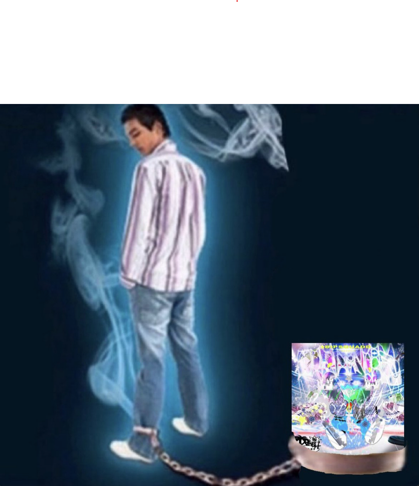

Creado por Luis para ti.
Por favor lee todas las secciones antes de cualquier cosa.
Taquero mucho



Creado por Luis para ti.
Por favor lee todas las secciones antes de cualquier cosa.
Taquero mucho
La conocí el 18 de Julio de 2025 en la prepa.
La vi por primera vez en el receso, iba caminando con mi amigo Deriam por la zona de caja, cuando de repente veo que una mujer de cabello largo y lacio de color castaño oscuro, fleco, ojos cafés, con una camiseta blanca ajustada con rayas horizontales de color azul celeste, un pantalón ajustado que parecía vaquero y tenis blancos, acompañada su amiga, dan la vuelta desde el pasillo que lleva al laboratorio hacia donde estábamos nosotros, nos vimos de frente pero la mujer que me pareció más atractiva le dijó algo a su amiga pelirroja y se regresaron por donde habían llegado. En ese momento me detuve y le dije a mi mejor amigo Deriam, "¿No mames viste a esa ruca? Estaba bien preciosa, si la vuelvo a ver le voy a hablar te lo prometo".
Deriam me dice, "Alv perro, si te pela esa morra me desnudo, se ve bien mamoncita"
Yo le dije Deriam que fueramos por el pasillo por donde se regresaron porque Jasel de quien aún no conocía su nombre me había parecido tan hermosa que quería volver a mirarla. Aunque recuerdo que la perdí, como si hubiera desaparecido.
Entonces se acabó el receso y ya no la ví, pero después de la segunda clase de los cursos llegó la salida, y le volví a decir a Deriam que quería encontrar a esa mujer tan guapa, entonces le dije. "Wey ayudame a encontrar a esta morra, tu nomas busca a la morra mas hermosa y ya vas a saber que pues es ella". Yo pensé que ya no la vería, porque mi salón había salido más tarde que la mayoría, pero de repente, por la zona de dirección donde está el coyote de la prepa, la ví de nuevo y le dije a Deriam emocionado. "¡Weyy es ella! chin pero anda con sus amigas...", y le dije a Deriam que esperáramos a que se fueran sus amigas para ir a hablarle y me quedé viéndola por la salida de la prepa, pero luego pensé: "¿Y si es de las niñas que vienen a recogerlas sus papás y llegan pronto? Si es así, voy a perder la oportunidad de hablarle". Entonces me llegó la motivación y le dije. "Se me hace que así mero alv, si no nunca le voy a hablar"
Entonces me acerqué a ella, estaba muy motivado y según yo, tenía mucha confianza en ese momento, pero entonces cuando fui a hablarle, la toqué del hombro y volteó, pero ví que estaba hablando con alguien por teléfono, entonces pensé "¿ahora qué hago?", y le dije "¿Estás ocupada?", después la mujer de ojos cafés me responde "Si esperame poquito" y se da la vuelta para atender la llamada, conté el tiempo en mi cabeza y fueron aproximadamente 40 segundos los que estuve parado bien incómodo y a lo lejos veía a Deriam que se estaba riendo de mí porque pensaba que me habían rechazado.
Después que termina la llamada, voltea conmigo y nos vemos a los ojos, entonces me dice: "Perdón me llamó mi mamá, ahora si, ¿que querías?"
Entonces yo le dije: "Oye es que la verdad te me hiciste muy guapa, ¿me pasas tu instagram?". Se suponía que iba con mucha confianza y motivación de hablarle, pero en el fondo estaba muy nervioso, tanto que incluso me tembló un nervio de la parte izquierda de mi labio aunque traté de controlarlo para que no se diera cuenta.
Esa hermosa mujer me pasa su instagram, y traté de no hacer incómodo ese silencio mientras se abría la aplicación, así que le pregunté "¿Cómo te llamas?", y ella me responde: "Me llamo Zahori".
Realmente estaba tan nervioso, que le pregunté su nombre y literalmente no lo escuché y ni siquiera le dije cómo me llamaba, nada más dije algo como "Ahh que chido".
Después me despedí de ella, y me fui, me sentí bien y mal al mismo tiempo, ya que no sabía si debí haber dicho algo diferente, o si el haberme quedado parado frente a ella esos 40 segundos me iba a bajar aura y ya no me iba a querer. Pero luego al día siguiente ella misma me mandó mensaje y me sorprendí, ya que yo justo pensé en mandarle mensaje, y ella me mandó mensaje a mi 5 segundos antes. Su mensaje fue "Holaa", y sinceramente me sentí muy feliz de que me hubiera mandado ese mensaje.
Entonces hablamos todo el fin de semana, sábado y domingo, le enseñé que me había cortado el cabello yo solo y estaba feliz de que me hubiera quedado bien, y ella también me dijo que se me veía muy bien, lo que me hizo sentir que estaba mejorando mucho en cortarme el pelo, ya que yo mismo me lo había empezado a cortar unos meses antes del día que nos conocimos.
Nos vimos en persona el lunes, después del fin de semana, aunque ella era muy tímida, demasiado de hecho, pero yo me daba cuenta que realmente a ella le gustaba mi presencia. Un día que recuerdo mucho fue una vez que me dió un beso en el cachete, ya que ella como mencioné, era muy tímida y puedo imaginar lo que le costó dar ese paso. Verdaderamente después de ese beso sentí una sensación que no puedo describir, ya que no podía creer que le hubiera gustado a esa bella mujer. Todo parecía tan perfecto hasta que ese mismo día me enteré que tenía novio, me dí cuenta y ella trató de ocultarlo, entonces me di cuenta que todo había terminado, me empezó a confesar que si era verdad que tenía novio y trató de consolarme diciendo que lo iba a terminar por mi, pero la interrumpí, y con lágrimas en los ojos le dije que tenía que ir al baño, y entré a un kfc que estaba al lado de la parada del camión, y lloré como por media hora en el baño. En verdad estaba destrozado, no sabía que hacer pero finalmente la perdoné ya que yo creía que ella en verdad sentía algo por mi.
Yo tenía miedo de que por ese error ya no la volvería a ver igual y que no lo podría superar, pero al final si pude.
Pasó el tiempo y pudimos olvidar ese incidente, entonces, llegó el día de su cumpleaños. El 29 de Agosto de 2025 cumplió 15 años, y no le regalé nada, sinceramente yo no acostumbro a dar regalos, aunque después me sentí mal por no darle nada. Al día siguiente, fuimos al parque fundidora por su cumpleaños. Solo fuimos ella, su amiga Marley y yo. Aunque Marley se iría a caminar sola, y me quedé solo con Zahori. Me la pasé increíble ese día y cada que lo recuerdo me pongo a llorar porque me gustaría estar ahí una vez más.
Yo no quería enamorarme de ella, porque sabía que no podría darle todo mi compromiso a Jasel en ese momento. Ella en verdad me amaba y yo no supe manejarlo, pasaba el tiempo y entre más tiempo pasaba, menos sabía como manejar sus sentimientos y mis sentimientos.
Como cualquier pareja, nos peleabamos, pero sinceramente yo sentía que cada pelea nos hacía mas fuertes, ya que después de pelearnos siempre nos perdonabamos y nos sentíamos más unidos.
Un día le dije que tal vez lo mejor era dejar las cosas hasta donde estaban, ya que no quería comprometerme a un noviazgo, no sabía si Jasel era la mujer que yo quería para tener un noviazgo, ya que peleabamos mucho y ella muchas veces no sabía que era lo que había hecho mal.
Que no supiera lo que hacía mal, me molestaba más y era lo que me hacia sentir que no funcionaría. Pero ahora que pasó el tiempo, me doy cuenta que ella nunca quiso hacerme sentir mal, siempre que me enojaba no era su intención haberme hecho sentir así.
Ella de verdad me amaba, y yo no la traté como merecía, o sea, aún cuando a veces yo la hacía sentir mal, ella me perdonaba y me seguía amando.
Al día siguiente de haberle dicho que ya dejaramos las cosas así, me arrepentí de lo que dije, y le llevé unas flores, ella me perdonó, y pensé en decirle que fuera mi novia en ese momento, pero al final no pude. Una parte de mí decía que no estaría comprometido con ella al 100%
Un día le confesé que quería hablar con otras mujeres, pero sinceramente, soy un tonto por haber pensado que hablar con otras mujeres sería bueno para mí, no lo hice, no hablé con otras mujeres, pero si tenía esos pensamientos. Entonces cuando le dije eso, ella con toda la razón, se sintió mal y me dijo que entonces ya dejaramos las cosas hasta ese punto. Esa fue la segunda vez que casi terminaba lo nuestro. Al día siguiente, fue el último día de la prepa, y yo estaba a punto de irme a mi casa, pero le mandé mensaje, le pregunté si iría al evento y si quería que fuera para que pudieramos halar. Ella me dijo que si iría pero que ella no se saldría de la prepa, que ella estaría con sus amigos... Cuando llegué la busqué y cuando la encontré me dijo "¿qué me querías decir?", pude darme cuenta de lo molesta que estaba y justo después de que me dijo eso le dije que quería ir al baño y que ahorita volvía. De verdad me dijo eso y me sentí muy mal, se me llenaron de lagrimas los ojos pero trataba de aguantar, entonces llegue al baño y me lavé la cara y volví a donde estaba ella, ella estaba muy molesta y no quería hablar conmigo, nos fuimos a sentar a una banca, yo sinceramente solo quería que supiera que le dije eso con toda honestidad, porque no quería hacerlo a escondidas, le dije eso porque sabía que no estaba realmente comprometido con ella, y no quería ocultarselo, lo cual ella no quería entender. Después de un rato que me siguió ignorando, y me dieron ganas de llorar de nuevo y me dijo que iba al baño. Como ya estaba llorando, le dije que si iba al baño me iba porque estaba llorando y no la quería esperar así solo en la prepa. Ella me dijo que me fuera entonces, y se dió la vuelta y fue al baño, y me fui. Entonces cuando ya me estaba yendo, escucho su voz, me grita: "Luis", me sigue y me agarra del brazo, le pregunté llorando "¿No que ibas al baño?", En ese momento me enamoré de ella, no recuerdo lo que me dijo, estaba muy triste, pero nos fuimos a un lugar más a solas ya que no quería que nadie me viera llorar, estuve llorando desconsoladamente y ella me besó y me perdonó. Yo estaba muy enfermo ese día, pero eso a ella no le importó y me siguió besando con amor. Después volvimos a la prepa y pasamos un día muy bonito.
Un día la esperé 2 horas a que llegara a la prepa, y cuando llegó, le dije que fueramos a un parque cerca de la prepa antes de su exámen, estuvimos unos 15 minutos sentados, y luego ya la acompañé a la prepa, la esperé más de una hora a que presentara su exámen, y después me dijo que tenía que hacer un proyecto, que la esperara mas rato. Se tardó 1 hora y media más y llegaron las 5:30pm cuando por fin terminó. Le dije que fueramos al parque de nuevo, o que fueramos a comer, o que hicieramos algo juntos. Yo quería estar con ella, quería verla y tener un momento a solas con ella. Estar abrazados todo un rato y besarnos. Pero ella me dijo que se tenía que ir y que ya fueramos a la parada del camión. Yo me enojé demasiado, le dije que nada más la espere más de 5 horas para llevarla a su casa y me enojé con ella. Ella me dijó que no se podía quedar porque su mamá la podía regañar, pero yo no escuché, simplemente la critiqué y le dije que no quería hablar con ella. Después ella trató de que la perdonara, me abrazó, me trató de besar, y yo la quitaba le decía que no quería. Pero de verdad me arrepiento mucho de no haberla escuchado, de no haberla entendido. De conversar con ella y decirle, Te esperé 5 horas, pero está bien, entiendo que ya te tengas que ir, entiendo que tu mamá te pueda regañar si no llegas temprano, otro día salimos y tenemos un rato juntos los 2.
En lugar de hablarlo, me alejé, y mostré desinterés, ella me confesó sus sentimientos, me dijo que la estaba dejando de querer, no explícitamente, pero me dió señales, y yo actué como si no me importara. Un día me dice que lo que ella quería desde hace meses, que fueramos novios, ya ni siquiera eso lo quería. Me dijo que ya había que dejar las cosas hasta ese punto y no me importó. No le dije nada. Solo le dije que respetaba su decisión. Lo tomé como una salida, ya que yo no quería enamorarme de ella, y pensé que estaba bien ya que yo no quería corresponderla.
Pero ahora que el tiempo pasó. Me doy cuenta que lo que hice fue muy malo, no estuvo bien que después de todo lo que ella ha hecho por mi, yo la traté así de mal. Y entiendo que no me quiera perdonar, entiendo que nunca más me quiera hablar y no me quiera ver, porque la traté muy mal, y de verdad me arrepiento de lo que hice. Porque, traté verdaderamente mal, a la persona que mas me ha amado en la vida.
Zahori espero que leas esto, quiero que sepas que de verdad estoy arrepentido de como te traté, no fue justo lo que hice, yo de verdad te amo y no lo supe manejar. No se que decirte para convencerte de que me des otra oportunidad. Pero espero que todavía me ames, y que si decides arriesgarte conmigo de verdad no te arrepentirás.
Te regalé esas cartas de yugioh, aunque el otro día ya no quisieras nada conmigo y no pudieras ni siquiera verme. Me gustaría que las cuidaras muy bien porque son muy valiosas para mi. Si aunque haga lo que haga, ya no quieres volver a verme lo entiendo. Pero por lo menos todo esto es para que sepas que te amo.
Nunca lo supiste, varias veces traté de decírtelo, cuando agarrabas mi celular te decía "tu te sabes la contraseña", pero nomas te confundías, nunca te lo dije asi directamente cual era la contraseña pero era 29 08 10.
Estas son las primeras fotos que nos tomamos, no querías tomarte foto al inicio, pero luego ya quisiste. Aunque como siempre salía bien feo yo, siempre hacia poses asi.
Casi nunca nos tomábamos fotos, pero estas son las siguientes que tengo, se me veía chido el cabello y luego me hice una desgracia xd, alc no recordaba que se viera tan feo, pero aún hasta feo me querías.
Este día fue el sábado 30 de agosto, cuando fuimos a festejar tu cumpleaños al Fundidora. Fue la mejor salida que he tenido en mi vida, ya que, como te he dicho, casi nunca me gusta salir a ningún lado. Miro la primera foto y me pregunto si de verdad me querías o si estabas fingiendo jaja, porque la neta según yo ese día me veía bien guapo, pero la verdad ahorita veo y digo no manches, alv no me veo tan chido, y mi pelo se ve horrible en la primera imagen. Esa fue la primera vez que pasamos un rato solos los dos y me la pasé increíble, gracias por haberme invitado.

Estas son las últimas fotos que nos tomamos, el 22 de octubre.
Zahori, te pido perdón por haberte tratado tan mal cuando tú estabas siendo honesta con tus sentimientos. Entiendo que no quieras volver a un lugar donde no eras feliz, y donde te hacía sentir mal, pero si decides volver de verdad no será lo mismo, quiero que seamos felices juntos. Hice todo esto para ti desde cero y espero que lo aprecies. Me gustaría que escucharas esta canción, es una de mis favoritas y te dedico la letra.
Para escucharla nomas picale a cualquier lugar de la canción.
Jueves 15/01/25 9:00. En el tiempo que te estuve esperando pensé en que te diría cuando llegaras, pensé que te sacarias de pedo pero que no querrías hablar conmigo. Pensé que cuando me dijeras que no querias hablar conmigo te diría que solo quería que agarraras eso y ya no te volvia a hablar en tu vida si así querías. También se suponía que te diría que te había hecho la carta ayer pero que me quedó horrible porque de verdad soy malo haciendo manualidades y dibujos, ya te había dicho. Pero pensé que mejor te hiciera algo que si se hacer y pues te hice una página web. No se porque pero pues no me salió decirte nada de eso y pues nada mas te dije que lo agarraras y nos vemos.
Tambien te quería decir que mi plan era dejar la carta e irme, pero pensé que así tal vez no la verías o que la podía ver alguien de tu familia y que por eso le puse contraseña, porque solo tu sabes cuando cumplo años. Eso es todo.